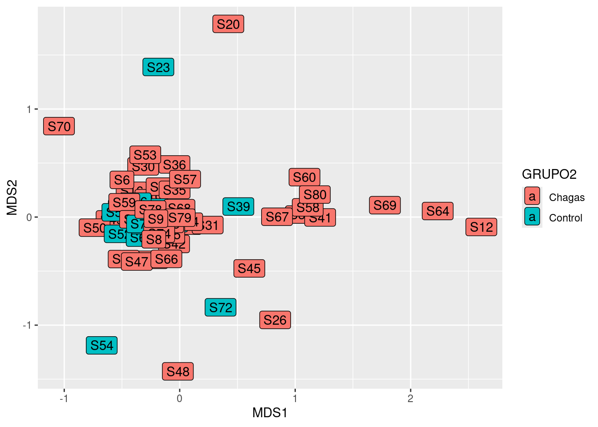

── Attaching core tidyverse packages ──────────────────────── tidyverse 2.0.0 ──
✔ dplyr 1.1.4 ✔ readr 2.1.5
✔ forcats 1.0.0 ✔ stringr 1.5.1
✔ ggplot2 3.5.1 ✔ tibble 3.2.1
✔ lubridate 1.9.3 ✔ tidyr 1.3.1
✔ purrr 1.0.2
── Conflicts ────────────────────────────────────────── tidyverse_conflicts() ──
✖ dplyr::filter() masks stats::filter()
✖ dplyr::lag() masks stats::lag()
ℹ Use the conflicted package (<http://conflicted.r-lib.org/>) to force all conflicts to become errors
library(vegan)
Cargando paquete requerido: permute
Cargando paquete requerido: lattice
This is vegan 2.6-8
library(ggstatsplot)
You can cite this package as:
Patil, I. (2021). Visualizations with statistical details: The 'ggstatsplot' approach.
Journal of Open Source Software, 6(61), 3167, doi:10.21105/joss.03167
library(BiodiversityR)
Cargando paquete requerido: tcltk
BiodiversityR 2.16-1: Use command BiodiversityRGUI() to launch the Graphical User Interface;
to see changes use BiodiversityRGUI(changeLog=TRUE, backward.compatibility.messages=TRUE)
library(mixOmics)
Cargando paquete requerido: MASS
Adjuntando el paquete: 'MASS'
The following object is masked from 'package:dplyr':
select
Loaded mixOmics 6.28.0
Thank you for using mixOmics!
Tutorials: http://mixomics.org
Bookdown vignette: https://mixomicsteam.github.io/Bookdown
Questions, issues: Follow the prompts at http://mixomics.org/contact-us
Cite us: citation('mixOmics')
Adjuntando el paquete: 'mixOmics'
The following object is masked from 'package:vegan':
pca
The following object is masked from 'package:purrr':
map
The following objects are masked from 'package:lubridate':
second, second<-
The following objects are masked from 'package:dplyr':
first, rename
The following object is masked from 'package:tidyr':
expand
The following object is masked from 'package:utils':
findMatches
The following objects are masked from 'package:base':
expand.grid, I, unname
Cargando paquete requerido: IRanges
Adjuntando el paquete: 'IRanges'
The following object is masked from 'package:lubridate':
%within%
The following objects are masked from 'package:dplyr':
collapse, desc, slice
The following object is masked from 'package:purrr':
reduce
Cargando paquete requerido: GenomeInfoDb
Cargando paquete requerido: Biobase
Welcome to Bioconductor
Vignettes contain introductory material; view with
'browseVignettes()'. To cite Bioconductor, see
'citation("Biobase")', and for packages 'citation("pkgname")'.
Adjuntando el paquete: 'Biobase'
The following object is masked from 'package:MatrixGenerics':
rowMedians
The following objects are masked from 'package:matrixStats':
anyMissing, rowMedians
Run 0 stress 0.1760028
Run 1 stress 0.1782568
Run 2 stress 0.1774388
Run 3 stress 0.1763506
... Procrustes: rmse 0.05073356 max resid 0.3468144
Run 4 stress 0.1696109
... New best solution
... Procrustes: rmse 0.06587389 max resid 0.342618
Run 5 stress 0.1875287
Run 6 stress 0.1811852
Run 7 stress 0.1745264
Run 8 stress 0.1757739
Run 9 stress 0.1799756
Run 10 stress 0.169854
... Procrustes: rmse 0.06085132 max resid 0.3695516
Run 11 stress 0.1672554
... New best solution
... Procrustes: rmse 0.0557405 max resid 0.3806967
Run 12 stress 0.1687486
Run 13 stress 0.1734396
Run 14 stress 0.4080225
Run 15 stress 0.1865179
Run 16 stress 0.1731931
Run 17 stress 0.1678809
Run 18 stress 0.1663048
... New best solution
... Procrustes: rmse 0.02998952 max resid 0.1261307
Run 19 stress 0.1822067
Run 20 stress 0.1696137
*** Best solution was not repeated -- monoMDS stopping criteria:
3: no. of iterations >= maxit
17: stress ratio > sratmax
data_plot_bc$points %>%as_tibble(rownames ="Sample") %>% dplyr::inner_join(metadata) %>%ggplot(aes(x = MDS1, y = MDS2, label = Sample , fill = GRUPO2)) +geom_label()
Joining with `by = join_by(Sample)`

data_plot_bc$points %>%as_tibble(rownames ="Sample") %>% dplyr::inner_join(metadata) %>%ggplot(aes(x = MDS1, y = MDS2, label = Sample , fill = tto_parasiticida_correcto)) +geom_label()